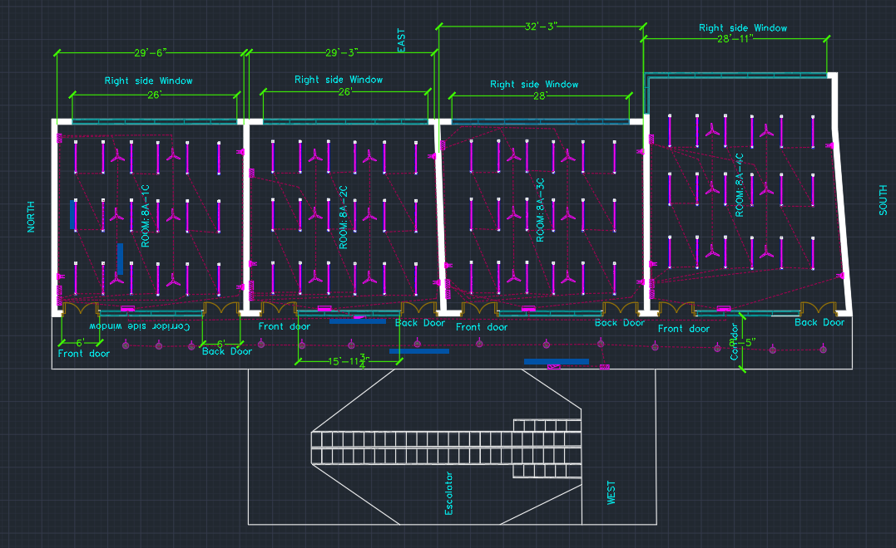
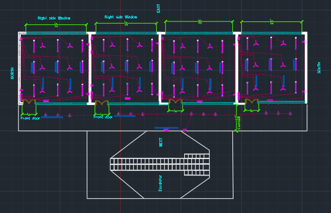
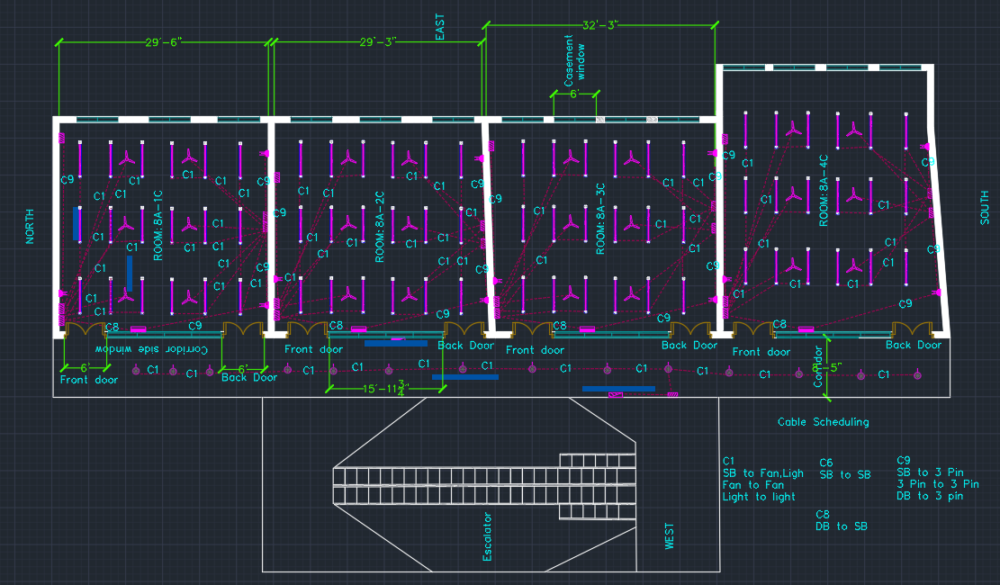

Overview
The project covers floor planning, component placement, load calculation and cable scheduling for four classrooms on Level 8, Block A. Two alternative layouts were developed to optimize lighting, fan control, room dimensions, wiring and door placement.
Problem statement
The existing classrooms had more light fixtures than needed, fans switched in groups of three, unequal room shapes and two doors per room. These choices waste lighting energy, run fans where nobody sits, and let cooled air escape.
Engineering objectives
- Draw the existing electrical layout accurately in AutoCAD.
- Design alternatives that reduce energy use without reducing comfort.
- Calculate loads and prepare a cable schedule.
System architecture
Each room is supplied from a distribution board (DB) feeding switchboards (SB), which control tube lights (18 W LED), ceiling fans (75 W) and 3-pin sockets. Design approach 2 adds a full cable schedule (C1, C6, C8, C9) for SB, DB, light, fan and socket connections.

Methodology
- Measured the rooms by counting the 1 ft × 1 ft floor tiles.
- Sketched the layout on paper, marking every light, fan and socket and its switchboard.
- Drew it in AutoCAD with walls, doors, windows, dimensions and electrical components.
- Designed two alternatives and calculated the load of each layout.
Hardware and software
Hardware
- Electrical components modelled: 18 W LED tube lights, 75 W ceiling fans, 5 A 3-pin sockets, switchboards and distribution board
Software & tools
- AutoCAD (.dwg drawings)
Implementation photographs


Results
| Base design | Design approach 1 (selected) | Design approach 2 | |
|---|---|---|---|
| Tube lights per room | 18 | 9 | 18 |
| Fan control | 3 fans per switch | Individual | Individual |
| Room shape | Unequal | Square, equal | As base |
| Doors per room | 2 | 1 | 2 |
| Cable schedule | – | – | Drawn (C1–C9) |
Performance metrics
Key findings
- Removing unnecessary fixtures halved the planned lighting consumption and made better use of daylight from the windows.
- Individual fan switches let fans run only where they are needed, which saves energy that the connected-load figure does not show.
- Square, symmetrical rooms with one door use space better and keep cooled air in, helping the HVAC system work more efficiently.
Links
- GitHub repository (AutoCAD drawings, figures and full report)